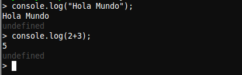

Tutorial de instalación de Node.js
Node.js® is a platform built on Chrome's JavaScript runtime for easily building fast, scalable network applications. Node.js uses an event-driven, non-blocking I/O model that makes it lightweight and efficient, perfect for data-intensive real-time applications that run across distributed devices.

Ubuntu
1. Instalación
Para la instalación en Ubuntu introduciremos las siguientes líneas en la terminal:
curl -sL https://deb.nodesource.com/setup | sudo bash -
sudo apt-get install -y nodejs
2. Uso
Para empezar a usar Node.js escribiremos el siguiente comando en la terminal:
nodejs
Windows
1. Instalación
Para la instalación en Windows nos descargaremos el instalador directamente de la página nodejs.org.
2. Uso
Para empezar a usar Node.js abriremos la aplicación instalada con el mismo nombre, abriéndose así la consola.
Primeros pasos
Para probar que todo ha ido bien probaremos lo siguiente:
console.log("Hola Mundo");
console.log(2+3);
La salida de estas líneas debería coincidir con la imagen adjunta.
